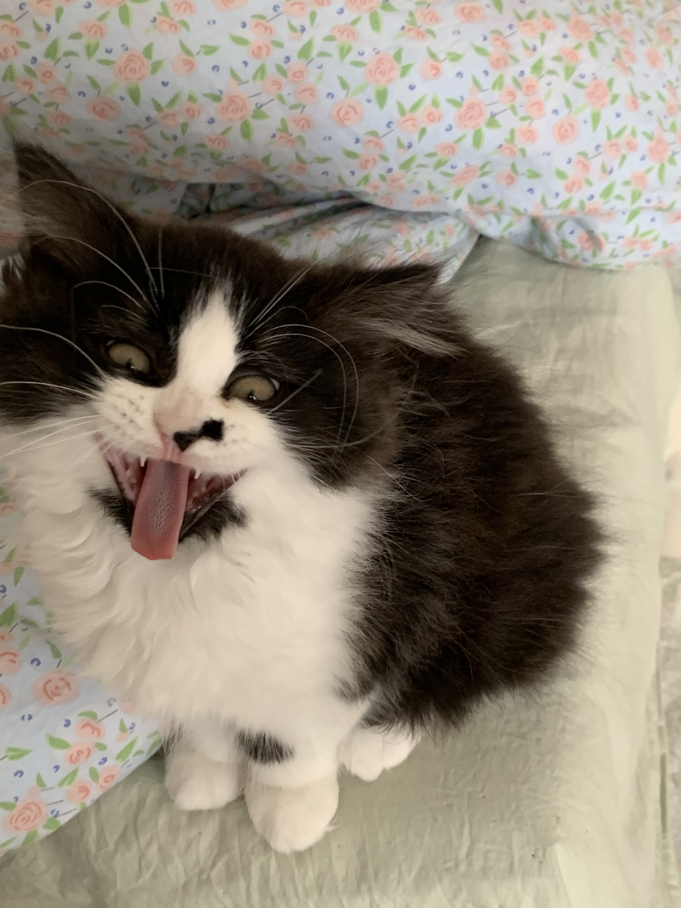
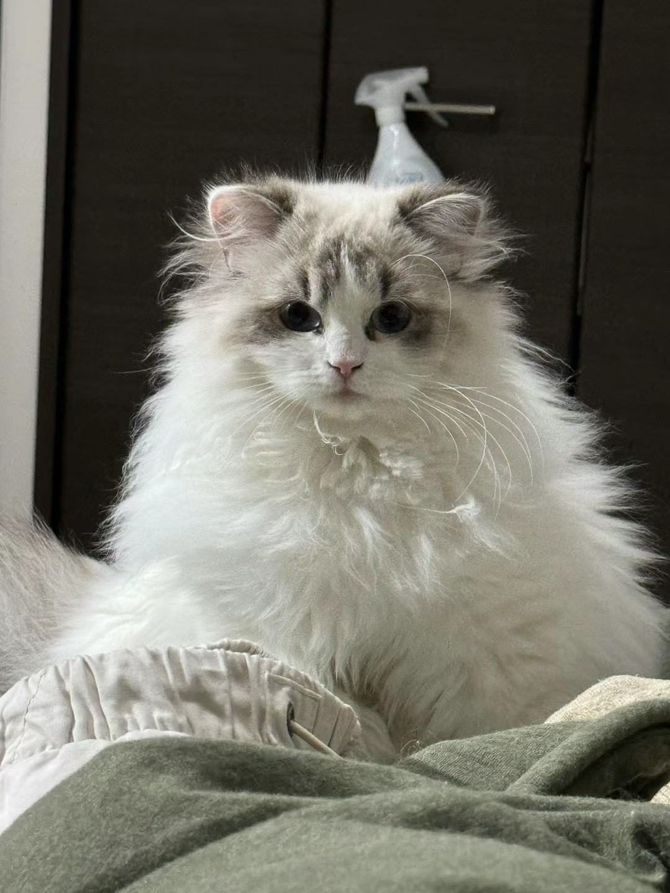
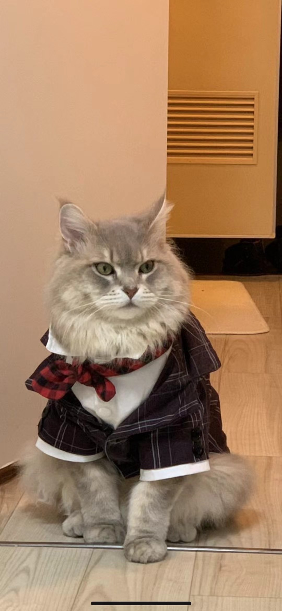
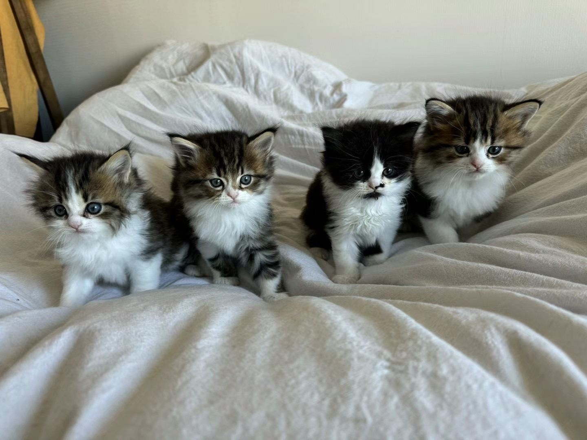

猫を飼い始めました！ とってもかあいいサイベリアンの子猫で、もうすぐ３ヶ月の誕生日が迎えます♡
初めまして、鼻嘎といいます₍^˶⦁༝⦁˶^₎◞ ̑̑

西国分寺生まれで食いしん坊な子猫です。
パパとママもサイベリアンで、
ママはラグドール、パパは灰猫です


そして、去年の10月、初めてパパとママは赤ちゃんが生まれました^-᎑-^ ੭
そりゃ 僕たち兄弟姉妹4匹です〜

私は兄弟の中で最も特別なのです〜☆
だって私だけハチ猫だもん♡
兄弟の中で一番度胸があって、知らない人が家に来たら、兄弟たちは怖がって隠れるんですが、
私は勇士になって敵を駆除するんです！
だから、今のママに初めて会った時は、ママの指をめちゃくちゃ噛みましたよ
私の名前は鼻嘎、中国語のお名前ですが、音訳してビガーってなります。
鼻嘎はハナクソの意味ですよ、鼻の横にあるあざが鼻くそに見えますから、こう名前づけてもらいました。
本当に、名前つけるセンスないよねママが😡
でもママが、実は私のあざがママも同じような鼻横のところにも持ってるから、すごく縁があるねって教えてくれました。